Les différentes classes d'objets
Tout objets que vous pourrez trouver dans Nethack pourra être classé dans une des catégories suivantes : Amulets (amulettes), Weapons (armes), Armors (armures), Comestibles (nourriture), Scrolls (parchemins), Spellbooks (livres de magie), Potions (potions), Rings (bagues), Wands (baguettes magiques), Tools (outils), Gems (gemmes et cailloux), Boulders/Statues (rochers et statues) et Gold (or). Dans une même catégorie, tous objets fonctionnent grossièrement de la même manière (à l'exception de la catégorie « outils », qui recouvre une grande variété d'objets) : toutes les armures pourront être portées sur soi, et auront éventuellement un effet sur votre AC (Armor Class), toute nourriture pourra être mangé (ce qui n'est pas nécessairement sage par ailleurs), etc. Cela n'empêche pas qu'un objet d'une catégorie puisse être utilisé comme s'il appartemait à une autre : si vous pouvez boire une potion, il est également possible de l'utiliser comme un projectile, une pioche peut servir à creuser, mais aussi à se battre, etc. N'hésitez donc pas à essayer une commande (apparemment) spécifique à une catégorie sur un objet n'y appartenant pas pour voir ce qui se passe (ou à défaut obtenir un message humoristique, si votre combinaison est suffisamment tordue...) !
Notez que deux objets ayant exactement la même apparence auront toujours le même effet (s'ils ont le même état béni/maudit, naturellement - voir plus bas). Cela concerne les amulettes, les pièces d'armure d'un même type, les parchemins, les livres, les potions, les anneaux et les baguettes magiques). Autrement dit, toutes les potions rouges que vous pourrez trouver dans le jeu auront le même effet, de même pour tous les parchemins dont le nom est « ELBIB YLOH », ou encore tous les anneaux en fer. Cependant, pour ne pas gâcher l'intérêt du jeu, les effets sont répartis aléatoirement entre les diverses apparences à chaque début de partie : ainsi, ce n'est pas parce que les parchemins dont le titre est « READ ME » sont des parchemins d'identification dans une partie que ce sera nécessairement le cas dans la partie suivante. Certains objets facilement identifiables auront toutefois toujours le même effet (par exemple, un parchemin sur lequel rien n'est écrit sera toujours un parchemin vierge...).
Les amulettes font partie des objets magiques les plus puissants qu'il est possible de découvrir : ce n'est pas pour rien que l'Amulet of Yendor en fait partie. Cependant, si certaines amulettes peuvent vous rendre de grands services, d'autres peuvent très bien se révéler être particulièrement dangereuses...
En principe, une amulette n'a pas d'effet tant que vous ne la mettez pas autour du cou. Pour ce faire, utilisez la commande (p)ut en appuyant simplement sur la touche « P », suivie de la lettre assignée à votre amulette. Pour la retirer, c'est la commande (r)emove (« R » suivi de la lettre appropriée) que vous devrez utiliser. Notez que vous ne pouvez porter qu'une seule amulette à la fois autour du cou, et que porter une amulettre consomme de l'énergie, ce qui se traduit par une consommation de nourriture accrue.
Il est possible d'utiliser dans Nethack une très large variété d'armes, de la classique épée longue au plus exotique bec-de-corbin, en passant par le fouet ou l'arbalète. La quantité d'informations relatives à l'armement justifie son traitement dans un tutoriel à part : pour en savoir plus, rendez-vous au tutoriel sur le combat.
La manière la plus simple de vous protéger des attaques ennemies consiste à enfiler une armure. L'AC (Armor Class), familière aux joueurs d'AD&D, est un indicateur de la protection dont vous disposez : elle est égale à 10 si vous n'avez aucune armure, et sera d'autant plus basse (éventuellement négative) que vous êtes bien protégé (généralement par une armure). Notez que le système choisi est du type « tout ou rien » : plus votre AC est base, plus vos ennemis vous toucheront rarement, mais s'il vous touchent vous recevrez autant de dommages (sauf rares exceptions) que si vous n'aviez pas d'armure. Voici par exemple l'AC que vous aurez en fonction de la cuirasse que vous portez (liste non exhaustive...) :
| Aucune | 10 |
| Leather jacket | 9 |
| Leather armor | 8 |
| Orcish chain mail | 8 |
| Ring mail | 7 |
| Studded leather armor | 7 |
| Scale mail | 6 |
| Orcish chain mail | 6 |
| Chain mail | 5 |
| Elven mithril coat | 5 |
| Dwarvish mithril coat | 4 |
| Banded mail | 4 |
| Splint mail | 4 |
| Bronze plate mail | 4 |
| Crystal plate mail | 3 |
| Plate mail | 3 |
| Dragon scale mail | 1 |
Bien entendu, il est possible de porter plusieurs pièces d'armure à la fois afin d'en cumuler les bonus, mais jamais plus d'une de chaque type (casque/chapeau, cuirasse, robe/cape, T-shirt, bouclier, gants, bottes/chassures).
Il se peut également qu'une pièce d'armure magique ne donne pas exactement sa protection standard : elle peut offrir une protection supplémentaire (par exemple, porter une « +1 chain mail » seule vous donnera une AC de 4 au lieu de 5), ou au contraire se révéler moins efficace (si elle est précédée d'un « -1 » par exemple). Le bonus ou le malus donné par une armure est immédiatement visible lorsque vous la mettez, mais attention, les armures possédant des enchantements négatifs sont en général en plus maudites (voir plus bas) et il est impossible de les retirer simplement.
Les armures peuvent naturellement être endommagées (par la rouille, le feu ou encore l'acide selon le matériau dans lequel elles sont faites) : cela a pour effet de diminuer son efficacité (mais pas au point d'augmenter votre AC), jusqu'à ce que vous trouviez un moyen de la réparer. Notez également que le port de certaines armures peut perturber le lancement de sorts.
La commande pour mettre une armure est « W » (majuscule !) (pour (w)ear), suivie de la lettre correspondant à votre pièce d'armure (à ne pas confondre avec la commande (p)ut utilisée pour les amulettes et autres anneaux). Pour enlever une armure, vous pouvez utiliser la commande « T » (pour (t)ake off) suivie de la lettre appropriée, ou encore la commande « A », qui peut être utilisée pour retirer n'importe quel objet porté sur soi (arme, armure, anneau, amulette...). Notez que pour enlever par exemple une cuirasse en-dessous d'une cape, vous devrez d'abord être capable d'enlever ladite cape, attention donc si vous trouvez une cape maudite !
 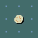 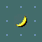 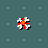
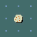 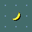 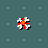
La nourriture est essentielle à votre survie : si vous ne mangez pas pendant un certain temps, vous vous affaiblirez progressivement, jusqu'à en mourir. Vous trouverez à l'occasion de quoi manger dans le donjon (rations de nourriture, oeufs, fruits...), mais il est peu probable que cela suffise à vous nourrir. La solution peu ragoûtante auquel vous devrez sans doute faire appel consiste à manger les cadavres des monstres que vous tuerez, mais attention ! Certains corps de créatures peuvent être toxiques, voire mortels en cas d'ingestion... À l'inverse, certains corps vous permettront parfois d'acquérir un pouvoirs spécial dont disposait la créature avant que vous ne l'abattiez.
Toute nourriture n'est pas bonne à manger, surtout après avoir été laissée pourrir un certain temps sans précaution. Les denrées périssables se conservent toutefois parfaitement dans une glacière (ice boxes) ou en conserves (tins), mais les premières sont très lourdes tandis que les secondes prennent beaucoup de temps à ouvrir.
Certains animaux (comme les chevaux) et certains personnages (essentiellement les moines) sont dits végétariens : cela signifie pour qu'ils ne peuvent (pour les premiers) ou doivent (pour les seconds, sous peine de pénalités) jamais manger de viande ou de corps d'animaux (voir pour plus de précisions le tutoriel sur les conduites). Choisissez donc une nourriture adaptée pour votre animal de compagnie !
Pour manger quelque chose qui se trouve dans votre inventaire, tapez simplement « e » (pour (e)at) suivie de la lettre adaptée. Si vous vous trouvez sur une case sur laquelle traîne quelque chose de comestible (typiquement, le corps d'une créature), le jeu vous demandera si vous ne voulez pas plutôt manger ce qui se trouve à vos pieds, répondez simplement « y » si c'est le cas (cela vous évite ainsi d'avoir à ramasser des corps trop volumineux pour être transportés si c'est pour les manger immédiatement).
Les parchemins (à l'exception des scrolls of mail et des unlabeled scrolls) sont des objets permettant de lancer de manière unique un sort précis sans risque d'échec. Une fois lu, le parchemin prend effet immédiatement et disparaît. L'un des parchemins les plus utile est le parchemin d'identification (identify scroll) : il permet de déterminer la nature exacte d'un objet de votre inventaire, s'il est béni ou maudit, s'il est enchanté, combien de charges il lui reste, etc.
Les scrolls of mail sont un peu à part : si l'option « mail » est activée dans votre fichier de configuration, un mail deamon apparaîtra lorsque vous recevrez un e-mail (dans la vraie vie !) et vous délivrera un tel parchemin, dont le contenu est un message humoristique, histoire de vous rappeler de temps en temps à la vie réelle... Mis à part cela, ces parchemins n'ont absolument aucune utilité dans Nethack (pour éviter les envois sauvages de mails à soi-même dans le seul but d'obtenir de nouveaux parchemins...).
Enfin, certains parchemin sont vierges (unlabeled scrolls), et ne disparaîtront pas lorsque vous les lirez pour la simple raison qu'ils ne contiennent aucune magie.
Pour lire un parchemin, utilisez la commande (r)ead en appuyant sur « r » puis sur la lettre associée au parchemin que vous désirez lire.
Les livres constituent le seul moyen que vous aurez à votre disposition d'apprendre de nouveaux sorts. Pour en lire un, vous devrez utiliser la commande (r)ead (« r »), comme pour un parchemin. Mais attention : il ne s'agit pas de livres normaux, c'est pourquoi il peut s'avérer particulièrement dangereux de lire un livre maudit (voir plus bas) ou contenant un sort trop difficile pour vous. Par ailleurs, à force de lire un livre, celui-ci finit par s'abîmer, et peut ainsi devenir illisible.
Une fois que vous avez appris un sort, appuyez sur « Z » (pour (z)ap) pour le lancer. Un menu s'ouvrira alors avec la liste des sortilèges connus, suivis de leur niveau, de la classe à laquelle ils appartiennent et de la probabilité d'échec de lancement. Sélectionnez la lettre du sort que vous voulez lancer, éventuellement suivie d'une touche directionnelle (y compris « . » pour vous désigner) si le sort le requiert, et, avec un peu de chance, vous en verrez les effets. Vous pouvez également appuyer sur « + » à tout moment pour obtenir ce même menu sans lancer de sorts.
Un pourcentage d'échec est non nul peut avoir plusieurs origines : le sort peut être d'un niveau trop élevé pour vous, vous pouvez être particulièrement peu habile dans cette classe de sorts, votre chance peut être basse ou encore l'armure que vous portez peut créer des interférences. Si vous lancez un sort avec une probabilité d'échec non nulle et que vous échouez, il ne se passera rien et vous aurez perdu des points de pouvoir et du temps pour rien.
Tout comme pour les armes, chaque fois que vous lancez un sort vous vous acquérez une certaine maîtrise dans sa catégorie, et après suffisamment d'entraînement vous pourrez vous améliorer dans le lancement de tous les sorts de cette catégorie (voir le tutoriel sur l'expérience).
Au fur et à mesure du temps, la mémoire des sortilèges s'efface, si bien qu'il se peut que vous ayez à le réapprendre (vous n'êtes plus capable de lancer un sort quand une astérisque (*) apparaît à côté d'un sort dans la liste obtenue en tapant « + »), éventuellement en relisant le livre dans lequel vous aviez initialement appris le sort.
 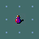
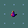 Il existe de nombreuses potions aux effets plus ou moins bénéfiques, la plupart du temps seulement temporaires. Chaque type de potion est reconnaissable à sa couleur, mais dans toutes les parties, les clear potions sont des potions ne contenant que de l'eau (sans effet a priori si vous les buvez, donc). Ces potions d'eau peuvent toutefois être bénies ou maudites, ce qui en modifie alors largement les propriétés : par exemple, les mort-vivants détestent l'eau bénite, et les en asperger (en utilisant les potions comme projectiles) peut ainsi eur infliger des dommages non négligeables.
Pour boire une potion, utilisez la commande (q)uaff : « q » suivie de la lettre correspondante. Vous pouvez aussi tremper quelque chose dans une potion. Pour cela, utilisez la commande #dip : « #d<Enter> » (ou « M-d »), puis la lettre de l'objet que vous voulez tremper, et enfin celle de la potion dans lequel vous voulez le tremper.
Les anneaux, comme les amulettes, confèrent à leur porteur un effet magique permanent (du moins, tant que l'anneau est porté). Le fait qu'ils soient généralement un peu moins puissants que les amulettes est compensé par la possibilité d'en porter deux (un à chaque annulaire). Tout comme les amulettes, porter un anneau consomme une certaine énergie, ce qui fait que votre faim augmentera plus rapidement.
Comme pour les amulettes, pour mettre un anneau vous devez utiliser la commande (p)ut (« P »), et (r)emove (« R ») pour l'enlever (la commande « A » fonctionne aussi).
Les baguettes magiques sont des objets permettant d'obtenir un effet magique un nombre limité de fois (égal au nombre de charges de la baguette). Quand une baguette n'a plus de charges, elle devient généralement inutile, jusqu'à ce qu'elle soit éventuellement (magiquement) rechargée (attention, vous pouvez faire exploser une baguette si vous tentez de la recharger trop de fois !). Certains prétendent toutefois qu'il est parfois possible d'extraire une dernière charge d'une baguette magique vide, au prix de sa destruction dans l'opération...
Pour utiliser une baguette, utilisez la commande (z)ap (« z », à ne pas confondre avec « Z » pour lancer un sort), puis la lettre correspondant à la baguette, et enfin éventuellement une direction dans laquelle orienter la baguette (y compris « . » pour vous désigner - ce qui est généralement déconseillé !).
Dans certains cas désespérés, vous pouvez essayer de briser une baguette magique pour relâcher d'un seul coup toute la magie qu'elle contient. Si malgré le danger que cela présente vous voulez tenter votre chance, utilisez la commande (a)pply (« a »), suivie de la lettre appropriée, et priez pour que vous surviviez à l'explosion...
Quand une baguette est complètement identifiée, vous pouvez lire à côté de son nom deux chiffres entre parenthèses : le premier indique le nombre de fois que la baguette a été rechargée, le second le nombre de charges restantes.
La catégorie « outils » recouvre une grande quantité d'objets plus ou moins exotiques (dont les contenants présentés au tutoriel précédent). Certains peuvent posséder des charges tout comme une baguette magique, d'autres peuvent être utilisés un nombre illimité de fois ; certains peuvent être utilisé comme un arme, d'autres peuvent être portés sur soi : n'ayez pas peur d'essayer un outil de manière originale pour obtenir des effets intéressants !
Pour utiliser un outil (ou plus généralement un objet quelconque) selon son usage « normal », entrez la commande (a)pply (« a ») suivie de la lettre de l'objet.
Certaines gemmes qu'il est possible de trouver dans le donjon sont très précieuses et peuvent être vendues fort cher chez certains marchands, à moins que vous ne préfériez les garder pour transporter plus facilement vos richesses (l'or peut peser lourd...). Les pierres précieuses peuvent en effet augmenter votre score si vous parvenez à sortir du donjon (en vie !) en les emmenant avec vous, comme si vous transportiez une quantité d'or équivalente à leur valeur.
D'autres pierres bien moins précieuses sont rangées avec les gemmes ; il s'agit pour l'essentiel de simples cailloux. Dans tous les cas, vous pouvez utiliser n'importe quelle pierre comme projectile, spécialement si vous disposez d'une fronde.
Les rochers (boulders) et les statues (statues) n'ont pas d'utilité particulière, et sont de plus très lourds. Cependant, certains prétendent qu'il existe des statues qui ne sont pas ce qu'elles semblent être, et que les rochers peuvent être utilisés par certains humanoïdes suffisamment forts comme projectiles...
Vous trouverez sans doute des rochers obstruant des couloirs dans le donjon : essayez simplement de les pousser jusqu'à ce que vous arriviez quelque part où vous pourrez le contourner. Si vous semblez coincé par un rocher, essayez de vous délester d'une bonne partie de votre inventaire et de vos armures, peut-être pourrez-vous vous faufiler dans une faille et traverser le rocher.
Il existe quelque part une branche (facultative) du donjon nommée le Sokoban, en référence au jeu du même nom sur ordinateur dont le but est de pousser avec astuce des caisses dans des trous. Le principe est ici le même, vous devez pousser des rochers dans des trous pour atteindre l'escalier suivant. Avec de l'astuce et de la prévoyance, il est ainsi possible de compléter tous les niveaux en respectant strictement les règles du Sokoban ; il est toutefois possible d'utiliser certains moyens de « tricher » (par exemple, traverser un rocher en laissant votre équipement de côté, ou encore détruire un rocher), mais cela fera diminuer votre chance.
L'or (compté en zorkmids) est la monnaie d'échange courante dans Nethack. Il sert essentiellement (mais pas uniquement) à faire des affaires dans les nombreux magasins que vous pourrez trouver dans le donjon. De plus, posséder de l'or vous donne des points supplémentaires lorsque la partie se termine (même si vous mourrez).
Vous trouverez dans votre voyage de nombreuses boutiques (shops), plus ou moins spécialisées (certaines vendent et achètent de tout, d'autres se limitent aux outils ou aux bijoux, voire même seulement aux sources d'éclairage). Pour faire du commerce, entrez dans la boutique (attention, si le marchand s'entête à vous bloquer le passage, c'est sûrement parce qu'il n'a pas confiance : essayez de laisser à l'entrée certains objets qui pourraient vous permettre de sortir sans payer...). Si vous désirez vendre un objet, déposez le (avec « d ») au sol. Le marchand vous proposera alors un prix (si l'objet l'intéresse), appuyez sur « y » pour accepter cette quantité d'or en échange, ou sur « n » pour déposer votre objet sans le vendre.
Pour acheter un objet, ramassez-le simplement. Le marchand vous indiquera alors son prix, et il s'affichera dans votre inventaire avec la mention « (unpaid, <n> zorkmids) ». Si vous n'êtes pas satisfait, reposez-le au sol. Quand vous aurez pris tous les objets qui vous intéressent, entrez la commande (p)ay (« p »). Pour chaque objet impayé de votre inventaire, le marchand vous demandera si vous désirez réellement l'acheter : tapez « y » pour le payer, ou « n » si vous avez changé d'avis. Normalement, si vous n'avez plus aucun objet impayé dans votre inventaire, le marchand vous laissera alors sortir en se déplaçant de devant la porte.
Il existe bien sûr des moyens de sortir quand même du magasin avec des objets impayés, autrement dit de les voler. Il va sans dire que les marchands n'apprécieront guère et vous attaqueront sur-le-champ, et si les marchands arrivent à survivre dans un tel donjon, c'est qu'ils ont les moyens de se défendre... Si vous arrivez quand même à échapper au marchand, celui-ci fera tout de même appel aux Keystone cops, autrement dit à la police (!)... Réfléchissez donc bien avant d'agir inconsidérément !
Enfin, les marchands font de l'achat et le vente d'objet leur métier, inutile donc d'essayer de les rouler sur le prix d'une marchandise ou d'espérer revendre un objet plus cher que vous ne l'avez acheté... Cependant, si un marchand semble vous proposer un prix inconsidéré pour un objet, c'est peut-être signe que l'objet a plus de pouvoir qu'il semble au premier abord. Ou alors, qu'il essaie juste de vous arnaquer...
Certains objets présentent, en plus de leurs propriétés normales, des pouvoirs spéciaux : une épée pourra infliger des dommages supplémentaires par le feu ou être particulièrement efficace contre les dragons, une amulette pourra augmenter la vitesse de rechargement de votre mana, ou encore une dague pourra briller lorsque des orcs sont à proximité. Ces objets, fort rares, peuvent parfois être trouvés dans le donjon ; vous les identifierez immédiatement comme tels car ils porteront un nom spécifique (a broadsword named Dragonbane, an elven dagger named Sting, etc.). En revanche, leurs pouvoirs vous sont a priori inconnus, et vous ne les découvrirez qu'à force de les utiliser (même si vous pouvez vous douter qu'une épée nommée Dragonbane risque d'être particulièrement efficace contre les dragons).
De plus, certains artefacts possèdent des pouvoirs spéciaux qui ne correspondent pas à leur utilisation « normale » : pour les utiliser, vous devrez entrer la commande #invoke (« #i>Enter< » ou « M-i »). Attention, certains pouvoirs spéciaux ne peuvent être utilisés qu'un nombre limité de fois, ou encore nécéssitent un certain temps de repos entre chaque utilisation.
Les objets que vous pourrez trouver ça et là dans le donjon ont une certaine probabilité d'avoir été maudits (cursed) ou bénis (blessed) par un dieu, ce qui modifie généralement leurs propriétés. Cependant, à moins d'être un prêtre (ou une prêtresse !), vous n'avez pas moyen de savoir si tel est le cas ou non : rien ne les différencie a priori des objets « normaux ». Ils apparaîtront donc sans aucun préfixe quand vous les placerez dans votre inventaire ; si vous trouvez un moyen de connaître l'état d'un objet (avec un parchemin d'identification, par exemple), un préfixe cursed, uncursed ou blessed s'affichera alors à côté du nom de l'objet.
Un objet maudit fonctionne généralement moins bien qu'un objet standard : une arme ou une armure maudite pourra ainsi porter un enchantement négatif, de la nourriture maudite sera vraisemblablement avariée, ou encore un livre maudit pourra vous exploser au visage. Mais, surtout, une armure, une amulette ou un anneau maudit que vous avez le malheur d'enfiler ne pourra pas être retiré par un moyen normal ; de même, vous ne pourrez plus lâcher une arme maudite si vous la prenez en main (ce qui est dramatique pour les armes à deux mains : impossible de lancer un sort ou d'ouvrir un coffre !). Sachez toutefois qu'il existe quand même des moyens (magiques) de retirer la malédiction d'un objet.
À l'inverse, un objet béni fonctionnera généralement mieux qu'un objet standard. Par exemple, une arme bénite infligera plus de dommages aux démons, ou une armure bénie portera bien souvent des enchantements positifs. Porter un objet béni peut être également un moyen de se prémunir contre une malédiction qui pourrait lui être infligée : en effet, un objet béni qui reçoit une malédiction redevient simplement un objet normal.
 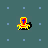 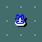
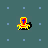 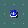Il existe certains éléments faisant partie intégrante du donjon (que vous ne pouvez donc pas emporter), mais avec lesquels vous pourrez interagir.
Les autels (altars) constituent un moyen privilégié d'entrer en contact avec un dieu. Parfois, ils sont gardés par un prêtre ou une prêtresse du dieu en question ; cependant, l'utilisation d'un autel (mais pas la désacralisation...) est entièrement libre. Attention quand même : votre dieu peut être offensé s'il se sent délaissé au profit d'un autre. Les autels sont relativement rares, mais aussi très recherchés : en expérimentant, vous devriez pouvoir trouver différentes manières d'en tirer parti.
Les tombes (graves) peuvent avoir deux origines : elles peuvent apparaître au hasard comme n'importe quel objet, ou faire partie d'un Bone file. Les Bone files sont des sauvegardes d'un niveau précis qui sont parfois générées au moment où un personnage meurt. Dans ce cas, le niveau est entièrement enregistré dans l'état exact où il était au moment du décès, y compris le cadavre du personnage et tout son équipement avec (généralement maudit dans l'opération), avec toutefois une tombe ajoutée à l'endroit où le personnage est mort, portant son nom et la cause de sa mort. Rien ne vous empêche alors de récupérer tout cet équipement, mais attention, la cause du décès rôde sans doute encore dans les environs... Les tombes en elles-même, quelque soient la manière dont elles sont générées, ne présentent guère d'intérêt, mis à part celui d'y lire un message humoristique.
Les trônes (thrones) sont des sièges magiques en or incrustés de pierres précieuses. Généralement, vous le trouverez occupé par une créature et sa cour ; faire irruption dans une salle du trône sans précaution peut donc parfois se révéler un tantinet osé...
Les lavabos et les fontaines sont à peu près les seules sources d'eau potable que vous pourrez trouver dans le donjon (à moins de tomber sur un lac souterrain). Cependant, d'après plusieurs aventuriers, il assez peu sage d'y boire, des effets magiques fort déplaisants se produisant parfois. À vous de voir si vous avez confiance en votre chance !
Lire le tutoriel suivant
Revenir à la liste des tutoriels